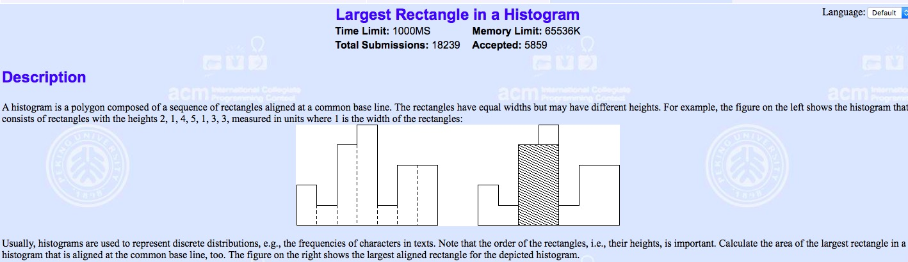

POJ上有一到有趣的题：求一个柱状图中面积最大的矩阵面积为多少?
最暴力的方法当然0.0不值一提，下面看看如何用单调栈的方法解决

单调栈
维护单调栈：
进栈操作：每次入栈前先检验栈顶元素和进栈元素x的大小，如果小于x，就让x直接入栈。如果栈顶元素大于等于x,那么出栈，直到栈空或者栈顶元素小于x
例子
$ a[\;] = \lbrace 1, 4, 5, 2, 0 \rbrace $
- 初始栈为空，进栈，栈内元素(1)
- 4大于1，进栈。栈内元素(1,4)
- 5大于4，进栈。栈内元素(1,4,5)
- 2小于5, 5出栈，2小于4,4出栈，2大于1,进栈，栈内元素(1,2)
- 0要入栈，1,2出栈，0进栈。栈内元素(0)
用途可以在 $O(n)$ 时间内找到$i$位置左(右)边首次比它小的位置。详见POJ2559的代码求解
1
2
3
4
5
6
7
8
9
10
11
12
13
14
15
16
17
18
19
20
21
22
23
24
25
26
27
28
29
30
31
32
| #include <bits/stdc++.h>
const int N = 1e5+5;
int L[N],R[N],stk[N];
void monoStack(int h[], int n){
int top = 0;
for(int j = 0; j < n; ++j) {
while(top && h[stk[top-1]] >= h[j]) --top;
L[j] = (top == 0?-1:stk[top-1]);
stk[top++] = j;
}
top = 0;
for(int j = n-1; j >= 0; --j) {
while(top && h[stk[top-1]] >= h[j]) --top;
R[j] = top == 0?n:stk[top-1];
stk[top++] = j;
}
}
int main(){
int n;
while(~scanf("%d",&n)&&n){
for(int i=1;i<=n;++i){
scanf("%d",h+i);
}
monoStack(h,n);
LL ans = 0;
for(int i=1;i<=n;++i){
ans = max(ans,LL(h[i])*(R[i]-L[i]-1));
}
cout<<ans<<endl;
}
return 0;
}
|